A special case of a linear elastic isotropic material is an ideal gas for small pressure deviations. From the ideal gas equation one finds that the pressure deviation 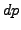 is related to a density change 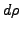 by
| 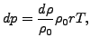 | (255) |
where 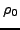 is the density at rest,  is the specific gas constant and
is the specific gas constant and  is the temperature in Kelvin. From this one can derive the equations
is the temperature in Kelvin. From this one can derive the equations
| 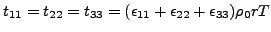 | (256) |
and
| 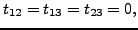 | (257) |
where 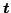 denotes the stress and 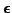 the linear strain. This means that an ideal gas can be modeled as an isotropic elastic material with Lamé constants 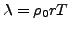 and 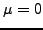. This corresponds to a Young's modulus 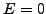 and a Poisson coefficient 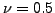. Since the latter values lead to numerical difficulties it is advantageous to define the ideal gas as an orthotropic material with 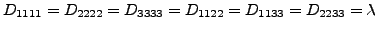 and 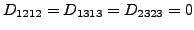.